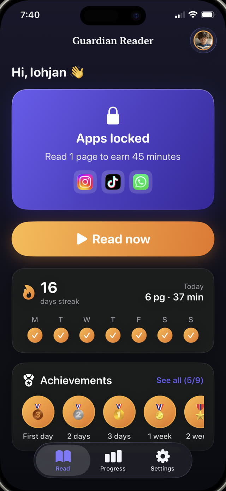
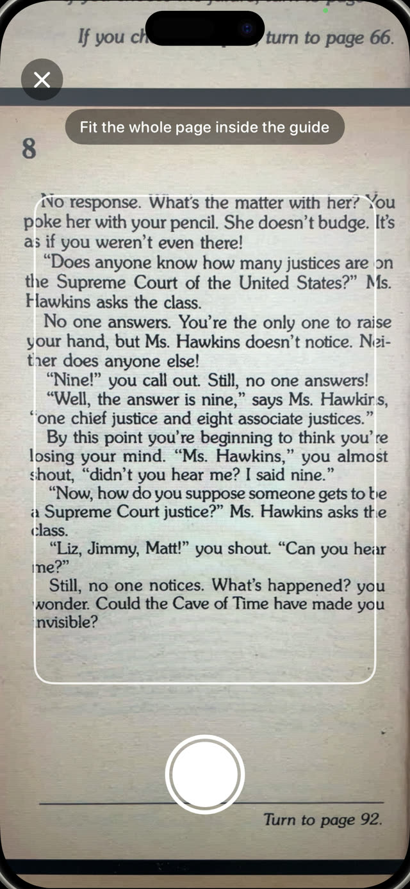
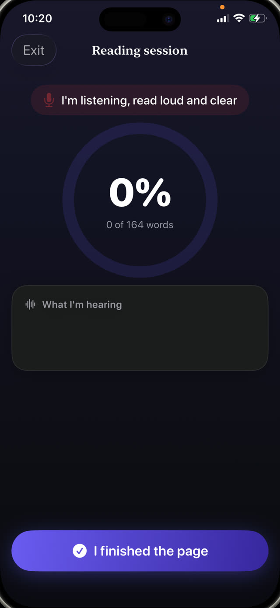
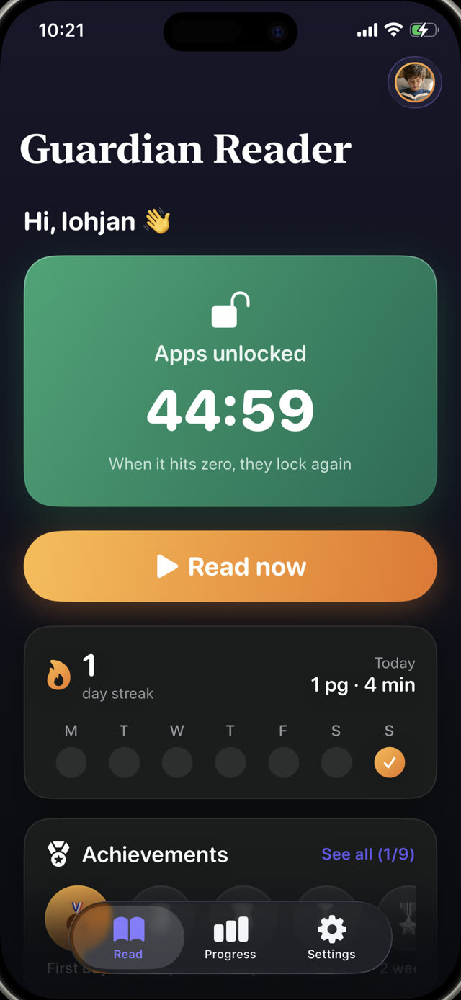
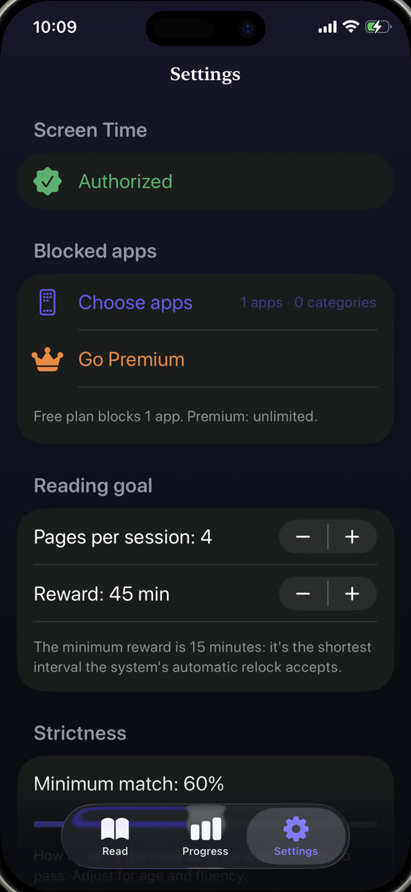
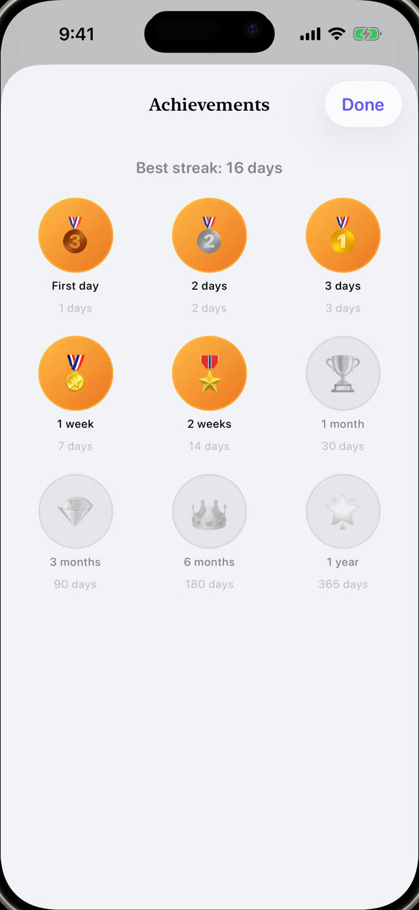
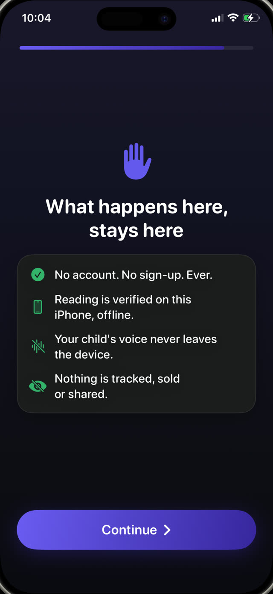

The parental control that listens to them read.
Guardian Reader locks the apps you choose. Your child reads a real book out loud, the iPhone verifies every word, and the screen time they earned unlocks. No willpower required, from either of you.
Free to download · For the child's iPhone, iOS 18+ · No accounts, no tracking · 9 languages


Read to play.
Guardian Reader puts a real book between your child and their apps. A few pages read out loud, verified word by word, and the screen opens.
iPhone · iOS 18+ · Free: verified reading + one blocked app · Premium with 7 day free trial
Inside the App
Block apps until the reading is done.
A parental control and a reading coach in one. Your child runs it alone; the iPhone does the checking.
Live verification
Watch it verify, word by word.
While your child reads out loud, the app matches what it hears against the scanned pages and the percentage climbs live. This is a real session, reading a paper book to an iPhone. Honest reading lands far above the pass mark; talking about something else lands near zero.
Reading aloud is the exercise →
Scan the pages
Any paper book becomes the key.
Your child photographs every page they are going to read, one photo per page, then reads them all straight through like a real book. Only the text inside the framing guide counts, and a page already scanned in that session is rejected automatically.
How to get your kids to read more →
Anti-cheating
It catches the shortcuts kids actually take.
No quiz to guess, no honor system. The spoken words are compared against the exact pages they scanned, in order, so skimming, improvising or claiming it is done does not pass. Stumbles and small mistakes do: it checks that they read, not that they were perfect. A slider lets you set how strict the pass mark is.
How earning screen time works →
The reward
Pass the reading. Unlock the phone.
The apps open for exactly the minutes they earned, with a countdown in plain sight. When it hits zero they lock again by themselves, enforced by Apple's Screen Time system, even if Guardian Reader is closed.
How to limit YouTube and TikTok →
Parent rules
You set the exchange rate.
Pages in, minutes out: one page earns about 15 minutes at ages 4 to 6, up to four pages for about 45 minutes for teens. The plan suggests a starting point by age, and every number can be changed behind a parent PIN that is separate from the phone passcode.
Screen time rules that actually work →
Progress & streaks
Medals that keep them coming back.
Streaks, stars and medals for the child; pages per day, month and year for you. Premium adds a PDF report of every session: date, minutes, match percentage and the text they actually read, ready to hand to a teacher.
A reading log for school →
Private by design
A microphone pointed at a child should explain itself.
The camera reads the page, the microphone transcribes the reading, and both work on the device only. No account, no server, no analytics, no third-party SDKs: the voice never leaves the iPhone, and everything works offline.
Read the full privacy policy →How it works
Four steps. Nothing to negotiate.
Set it up once with your child. After that, the deal runs itself: the limit lives in the app, not in your voice.
Lock the apps
Pick the apps or whole categories to lock, like YouTube, TikTok or games, and protect the settings with your parent PIN.
Scan the pages
Your child photographs the pages of a real book they are about to read, one photo per page.
Read out loud
They read everything straight through while the iPhone listens and verifies every word against the scanned text.
Screen time unlocks
Pass the reading and the apps open for the earned minutes. At zero, they lock again by themselves.
Guides
Help for the hard parts.
Practical guides on screen time, blocking apps and getting kids to read, and how to put Guardian Reader to work on each one.
How to Get Your Kids to Read More
Seven approaches that work with a child who would rather be on a screen, and the one that needs no willpower from you.
Read the guide Screen TimeHow Kids Can Earn Screen Time by Reading
Turning screen time into something earned instead of expected, and how to make the rule stick without policing it.
Read the guide Parental ControlHow to Block Apps on Your Child's iPhone
What Screen Time can and cannot do, where kids find the loopholes, and how to close them for good.
Read the guide YouTube · TikTokHow to Limit YouTube and TikTok for Kids
Why time limits alone fail on infinite feeds, and what to put in front of the app instead.
Read the guide FluencyReading Fluency Practice at Home
What teachers mean by fluency, why reading aloud is the exercise, and how to fit ten minutes into a normal evening.
Read the guide Family rulesScreen Time Rules That Actually Work
Why most family screen rules collapse in two weeks, and the three properties the ones that survive have in common.
Read the guideFAQ
Questions, answered.
How does Guardian Reader verify my child actually read the book?
Can my child cheat by pretending to read?
Could an AI voice read the page instead of my child?
Do I install Guardian Reader on my phone or my child's?
Which apps can I block on my child's iPhone?
Does Guardian Reader record my child's voice?
What books work with the app?
What age is Guardian Reader for?
How much does Guardian Reader cost?
Can I get a reading log for school?
Does it work without internet?
Can my child just uninstall the app or change the settings?
Tonight, reading comes first.
Two minutes of setup. Your child reads out loud, earns their screen time, and you are not the bad guy anymore.
Download on theApp StoreFree to download · No ads, no accounts, no tracking